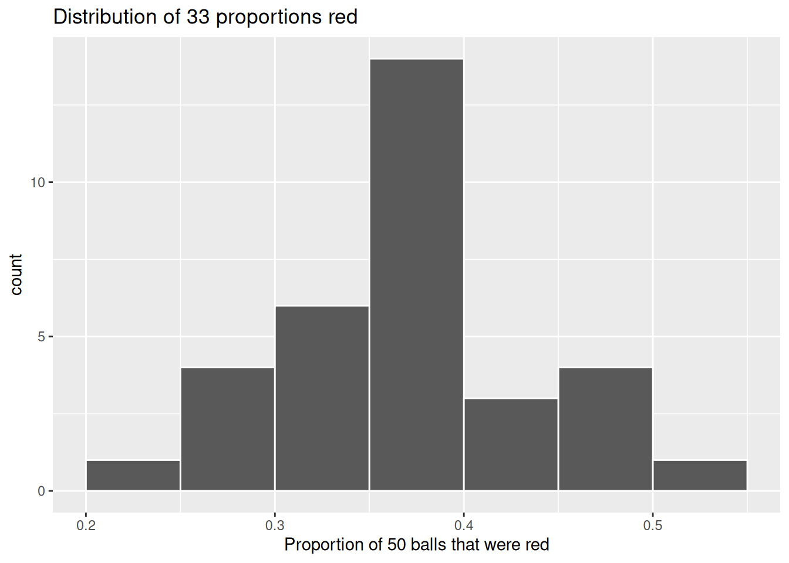

Neste capítulo, iniciamos a primeira parte sobre inferência estatística aprendendo um pouco sobre amostragem. Os conceitos por trás da amostram são a base para intervalos de confiança e testes de hipóteses, por exemplo. Além disso, veremos que ferramentas já aprendidas durante o curso de Ciência de Dados, em particular visualização de dados e manipulação (organização) de dados, são importantes no desenvolvimento do seu entendimento. Esperamos que os conceitos apresentados ao longo deste texto se articulam e se acumulam, culminando na capacidade de “contar sua história com dados”.
2.1 Pacote Necessários
Neste capítulo iremos utilizar os pacotes Rtidyverse e moderndive. Por exemplo, para instalar o pacote basta usar install.packages("tidyverse") e podemos carregar o pacote por meio do comando library(tidyverse). São carregados, de uma só vez, os seguinte pacotes amplamente utilizados em ciência de dados:
ggplot2 para visualização de dados;
dplyr para manipulação de dados;
tidyr para converter dados para o formato “tidy”;
readr para importar dados de planilhas para o R,
além dos pacotes mais avançados purrr, tibble, stringr e forcats.
library(tidyverse)
── Attaching core tidyverse packages ──────────────────────── tidyverse 2.0.0 ──
✔ dplyr 1.1.4 ✔ readr 2.1.5
✔ forcats 1.0.0 ✔ stringr 1.5.2
✔ ggplot2 4.0.0 ✔ tibble 3.3.0
✔ lubridate 1.9.3 ✔ tidyr 1.3.1
✔ purrr 1.1.0
── Conflicts ────────────────────────────────────────── tidyverse_conflicts() ──
✖ dplyr::filter() masks stats::filter()
✖ dplyr::lag() masks stats::lag()
ℹ Use the conflicted package (<http://conflicted.r-lib.org/>) to force all conflicts to become errors
library(moderndive)
2.2 Experimento em Sala de Aula
Iremos realizar o seguinte experimento em sala de aula:
Organização
A turma é dividida em grupos independentes (por exemplo, 33 grupos).
Cada grupo realiza uma única amostragem.
Protocolo experimental (por grupo)
A urna é misturada cuidadosamente, garantindo aleatoriedade.
O grupo retira uma amostra de tamanho fixo \(n\) (por exemplo, \(n=50\)) sem reposição durante a retirada.
As bolas retiradas são observadas e classificadas por cor.
O grupo registra:
\(R:\) o número de bolas vermelhas na amostra;
\(\hat{p} = R/n:\) proporção amostral de bolas vermelhas.
Todas as bolas são devolvidas à urna.
A urna é novamente misturada antes da próxima amostragem.
Cada grupo deve atuar de forma independente, sem acesso aos resultados dos demais.
Coleta e organização dos dados
Cada grupo fornece sua estimativa de \(\hat{p}\).
O conjunto de estimativas é reunido em uma tabela ou planilha.
A proporções são representadas graficamente por meio de um histograma.
Esse histograma representa a distribuição amostral da proporção para uma tamanho de amostra fixo \(n\).
Verificação de aprendizagem
Por que foi importante misturar a tigela antes de retirarmos as bolas?
Por que os 33 grupos de amigos não obtiveram todos o mesmo número de bolas vermelhas entre as 50 retiradas e, consequentemente, proporções diferentes de bolas vermelhas?
2.3 Experimento Virtual
No pacote moderndive existe um data frame chamado bowl. As linhas de bowl correspondem exatamente ao conteúdo da urna real apresentada em sala de aula.
bowl
# A tibble: 2,400 × 2
ball_ID color
<int> <chr>
1 1 white
2 2 white
3 3 white
4 4 red
5 5 white
6 6 white
7 7 red
8 8 white
9 9 red
10 10 white
# ℹ 2,390 more rows
Observe que bowl possui 2400 linhas, o que nos indica que a urna contém 2400 bolas de mesmo tamanho. A primeira variável, ball_ID, é usada como uma variável de identificação, conforme discutido em sala de aula, nenhuma das bolas da urna real possui números marcados. A segunda variável, color, indica se uma determinada bola virtual é vermelha ou branca. Visualize o conteúdo de bowl no visualizador de dados do RStudio e percorra as linhas para se convencer de que bowl é, de fato, um análogo virtual da urna real apresentada em sala.
Agora precisamos de um análogo virtual da pá para gerar amostras virtuais de 50 bolas. Para isso, vamos utilizar a função rep_sample_n(), incluída no pacote moderndive. Essa função permite realizar amostragens repetidas (ou replicadas) de tamanho (n).
# A tibble: 50 × 3
# Groups: replicate [1]
replicate ball_ID color
<int> <int> <chr>
1 1 2005 red
2 1 1234 white
3 1 505 red
4 1 1709 red
5 1 2028 white
6 1 2000 white
7 1 1328 red
8 1 2317 white
9 1 2084 white
10 1 1556 red
# ℹ 40 more rows
A variável ball_ID identifica quais das 2400 bolas do objeto bowl foram incluídas na nossa amostra de 50 bolas, enquanto color indica a cor de cada bola. No entanto, o que indica a variável replicate?
No caso de pa_virtual, a variável replicate é igual a 1 em todas as 50 linhas. Isso nos informa que essas 50 linhas correspondem à nossa primeira amostra. Veremos em breve que, quando realizarmos 33 amostragens virtuais, a variável replicate assumirá valores entre 1 e 33.
Vamos agora calcular a proporção de bolas vermelhas em nossa amostra virtual utilizando os verbos de manipulação de dados do dplyr. Primeiro, para cada uma das 50 bolas amostradas, vamos identificar se ela é vermelha ou não, utilizando um teste de igualdade com ==. Em seguida, criaremos uma nova variável booleana is_red usando a função mutate():
pa_virtual %>%mutate(is_red = (color =="red"))
# A tibble: 50 × 4
# Groups: replicate [1]
replicate ball_ID color is_red
<int> <int> <chr> <lgl>
1 1 2005 red TRUE
2 1 1234 white FALSE
3 1 505 red TRUE
4 1 1709 red TRUE
5 1 2028 white FALSE
6 1 2000 white FALSE
7 1 1328 red TRUE
8 1 2317 white FALSE
9 1 2084 white FALSE
10 1 1556 red TRUE
# ℹ 40 more rows
Observe que, para cada linha em que color == "red", é retornado o valor lógico (booleano) TRUE, e para cada linha em que color não é igual a "red", é retornado o valor lógico FALSE.
Em seguida, vamos calcular o número de bolas vermelhas, dentre as 50, utilizando a função summarize(). Note que summarize() recebe um data frame com várias linhas e retorna um data frame com uma única linha, contendo estatísticas-resumo, como mean() ou median(). Neste caso, utilizaremos a função sum():
Por que isso funciona? Porque o R trata TRUE como o número 1 e FALSE como o número 0. Assim, somar valores TRUE e FALSE é equivalente a somar 1’s e 0’s. Ao final, essa operação conta o número de bolas para as quais a variável color é igual a “red”. No nosso caso, XX das 50 bolas eram vermelhas. No entanto, você pode ter obtido um número diferente de bolas vermelhas devido ao caráter aleatório da amostragem virtual.
Por fim, vamos calcular a proporção das 50 bolas amostradas que são vermelhas, dividindo num_red por 50:
Em outras palavras, XX das bolas dessa amostra virtual eram vermelhas. Vamos tornar esse código um pouco mais compacto e conciso, combinando as etapas de mutate() e summarize() da seguinte forma:
Ótimo! XX das 50 bolas de virtual_shovel eram vermelhas! Assim, com base nessa amostra específica de 50 bolas, nossa estimativa da proporção de bolas vermelhas na urna é XX. Porém, lembre-se da atividade de amostragem realizada em sala de auma: se repetirmos essa amostragem, não necessariamente obteremos novamente o valor de XX. É provável que haja alguma variação. De fato, nossos 33 grupos de amigos calcularam 33 proporções desse tipo, cuja distribuição visualizamos em sala de aula, e vimos que essas estimativas variaram.
Vamos agora realizar o análogo virtual de ter 33 grupos de estudantes usando a pá de amostragem!
Lembre-se de que, no exercício de amostragem realizada em sala de aula, tivemos 33 grupos de estudantes, cada um utilizando a pá, o que resultou em 33 amostras de tamanho 50. Em seguida, usamos essas 33 amostras para calcular 33 proporções. Em outras palavras, repetimos/replicamos o uso da pá 33 vezes.
Podemos realizar essa amostragem repetida/replicada de forma virtual utilizando novamente a função rep_sample_n(), mas agora adicionando o argumento reps = 33. Isso indica ao R que desejamos repetir a amostragem 33 vezes.
Vamos salvar esses resultados em um data frame chamado virtual_samples. Embora apresentemos a seguir uma prévia das primeiras 10 linhas de virtual_samples, recomendamos fortemente que você explore todo o seu conteúdo utilizando o visualizador de planilhas do RStudio, executando o comando View(virtual_samples).
# A tibble: 1,650 × 3
# Groups: replicate [33]
replicate ball_ID color
<int> <int> <chr>
1 1 742 white
2 1 227 red
3 1 1358 white
4 1 1041 red
5 1 2175 white
6 1 248 white
7 1 628 white
8 1 1477 red
9 1 2154 white
10 1 1920 white
# ℹ 1,640 more rows
Observe, no visualizador de planilhas, que as primeiras 50 linhas da variável replicate são iguais a 1, enquanto as 50 linhas seguintes de replicate são iguais a 2. Isso nos indica que as primeiras 50 linhas correspondem à primeira amostra de 50 bolas, enquanto as próximas 50 linhas correspondem à segunda amostra de 50 bolas. Esse padrão se repete para todas as 33 replicações (reps = 33) e, portanto, o data frameamostra_virtual possui (33 = 1650) linhas.
Vamos agora usar amostra_virtual para calcular as 33 proporções de bolas vermelhas resultantes. Utilizaremos os mesmos verbos do dplyr de antes, mas agora com um group_by() adicional na variável replicate. Ao definir previamente a variável de agrupamento como metadado antes de aplicar summarize(), obteremos 33 proporções diferentes de bolas vermelhas. A seguir, exibimos uma prévia das primeiras 10 das 33 linhas resultantes:
Assim como ocorreu com as 33 amostras coletadas em sala de aula, há variação nas 33 proporções de bolas vermelhas obtidas virtualmente. Vamos visualizar essa variação por meio de um histograma. Note que também adicionamos os argumentos binwidth = 0.05 e boundary = 0.4.
Lembre-se de que definir boundary = 0.4 garante um esquema de classes em que um dos limites dos intervalos esteja em 0,4. Como o binwidth = 0.05 também foi especificado, isso criará intervalos com limites em 0,30, 0,35, 0,40, 0,45, 0,50, entre outros.
ggplot(virtual_prop_red, aes(x = prop_red)) +geom_histogram(binwidth =0.05, boundary =0.4, color ="white") +labs(x ="Proportion of 50 balls that were red",title ="Distribution of 33 proportions red")

Observe que, ocasionalmente, obtivemos proporções de bolas vermelhas inferiores a 30%. Por outro lado, em alguns casos, obtivemos proporções superiores a 45%. No entanto, as proporções que ocorreram com maior frequência ficaram entre 35% e 40% (em 11 das 33 amostras). Por que temos essas diferenças nas proporções de bolas vermelhas? Por causa da variação amostral.
Verificação de aprendizagem
Por que não foi possível estudar os efeitos da variação amostral quando utilizamos a pá virtual apenas uma vez? Por que foi necessário coletar mais de uma amostra virtual (no nosso caso, 33 amostras virtuais)?
Lista Semanal Obrigatória
Agora suponha que queiramos estudar os efeitos da variação amostral não para 33 amostras, mas para um número maior, digamos 1000 amostras. Vamos novamente utilizar a função rep_sample_n(), com o tamanho da amostra definido como 50, mas agora com o número de repetições reps definido como 1000.
Temos 1000 réplicas de prop_red, a proporção de bolas vermelhas em amostras de 50 bolas. Utilizando o mesmo código de antes, vamos agora visualizar a distribuição dessas 1000 réplicas de prop_red por meio de um histograma.
Observando o histograma produzido no item 2), você diria que amostrar 50 bolas em que 30% são vermelhas é provável ou improvável? E quanto a amostrar 50 bolas em que 10% são vermelhas?
2.4 Conceitos Importantes
A seguir, apresentamos uma lista de termos e notação matemática relacionados à amostragem.
Primeiramente, uma população é um conjunto de indivíduos ou observações de interesse. Isso também é comumente denominado população de estudo. Denotamos matematicamente o tamanho da população utilizando a letra maiúscula \(N\). Na nossa atividade de amostragem, a população (de estudo) é o conjunto de \(N = 2400\) bolas vermelhas e brancas, todas de mesmo tamanho, contidas na urna.